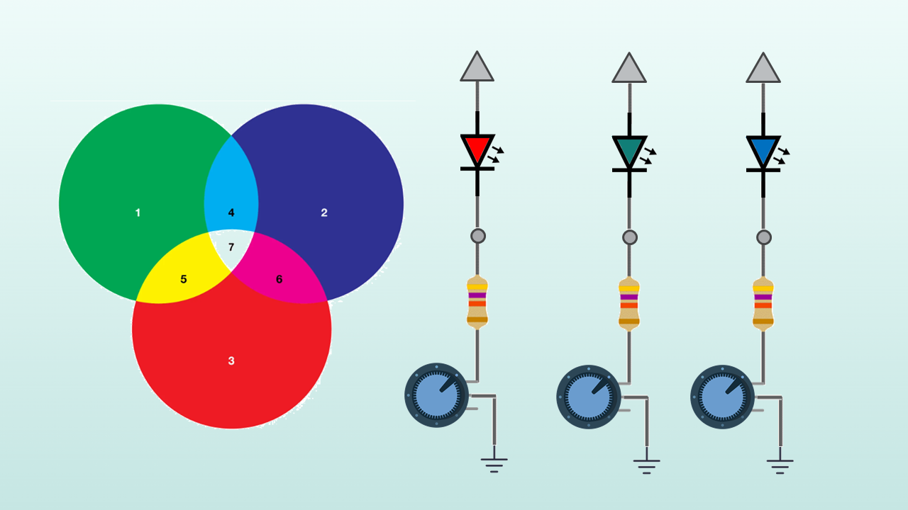

Arduino - Beginner
This course introduces the fundamentals of Arduino, including setup() and loop() functions, data types, and using the Serial Monitor for debugging. Students will learn about digital I/O, how to read analog inputs like potentiometers, control statements like if and if-else, and how to control LEDs and respond to button presses. Through simple projects, they will explore how to integrate hardware with software, making their designs flexible and functional.
Course Details
- Duration: 12 hours (total)
- Timings: Flexible, accommodating learners' schedules.
- Tools: Circuit simulations will be performed using TinkerCAD for a comprehensive understanding of design and functionality.
- Hands-on Practice: Each session includes real-world circuit assembly on breadboards to reinforce theoretical concepts with practical application.
Sessions
1. Fundamentals of Electronics
- Basic concepts: Voltage, Current, and Resistance
- Understanding circuits (open, closed, switches)
- TinkerCAD simulation environment
- Practical: First circuit simulation
2. Measurement Fundamentals
- Understanding the multimeter
- Measuring voltage, current, and resistance
- Practical: Virtual measurements in TinkerCAD
3. Resistors and Ohm's Law
- Resistor and color codes
- Understanding and applying Ohm's Law
- Series and parallel resistance
- Practical: Resistor network simulations
4. Circuit Building

- Breadboard
- Proper wiring techniques
- Circuit layout best practices
- Practical: Breadboard circuit assembly
5. Voltage Concepts

- Concept of Voltage drop
- Voltage division
- Applications
- Practical: Voltage divider circuits
6. Variable Resistance
- Potentiometers
- Applications of variable resistance
- Practical: Adjustable voltage divider
7. Light-Emitting Diodes

- LED characteristics
- Current limiting resistor calculations
- RGB LEDs
- Practical: LED circuit design and testing
8. Light-Sensitive Circuits
- Resistive Sensors
- Light Dependent Resistors (LDR)
- LDRs in circuits
- Practical: Light-sensitive voltage divider
9. Transistors
- Transistor types and characteristics
- High side & Low side switching
- NPN transistor as a switch
- Practical: Transistor switch circuit
10. Comparators
- LM393 comparator IC
- Threshold detection
- Practical applications
- Practical: Comparator-based control circuit
11. Temperature - Controlled Fan
- Temperature sensor TMP 36
- DC motor control
- Practical: Temperature-controlled fan system
12. Darkness Detector

- LM393 & LDR
- Circuit integration
- Testing and troubleshooting
- Practical: LDR-based lighting control
Contact
Feel free to reach out to me:
- Phone/WhatsApp: +91 735 629 9816
- Email: jithintj555@gmail.com